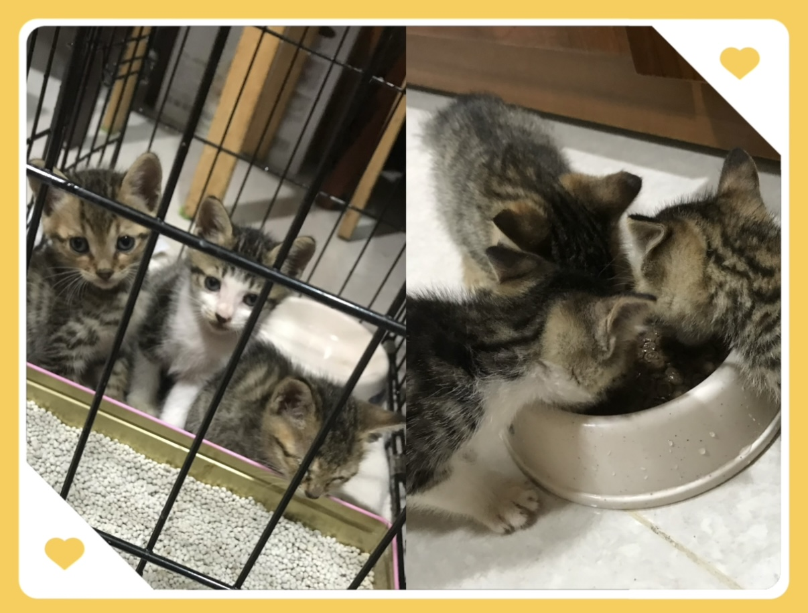

常見問題 Q&A
🐱 豆皮名字由來？

豆皮小時候長得很像達菲熊，取名Duffy，結果家裡的長輩念英文的時候有點台灣國音，Duffy唸起來聽著很像豆皮，後來我想與其糾正發音不如就改名吧！豆皮聽來也怪可愛的，於是她就從達菲熊變成了食物。
💗 豆皮有其他兄弟姊妹嗎？
豆皮是和另外兩隻小虎斑一起被發現的喔，但醫生說年齡都差不多，所以沒有辦法分辨誰大誰小，目前他們兩隻都在新家庭過得幸福喔～
🐾 豆皮的爸爸媽媽是誰？
豆皮被發現的時候只有媽媽在身邊，沒有看到爸爸，愛媽撿到他們後，因為媽媽年紀也大了很難找到主人，所以媽媽結紮後便放回原本的地方，幫孩子們找新家庭。
📬 如果想問更多，可以怎麼聯絡？
你可以前往 聯絡豆皮 留下訊息給我喵～